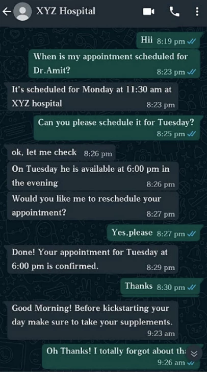

Given the growth in the health care industry, it becomes difficult for the service providers to maintain a top level of customer satisfaction & accessibility but with the use of technology & AI, the industry can deliver high-quality services to its customers.
Monotonous & repetitive tasks can be automated with the use of bots. Looking at the vast user base of WhatsApp with 1.5 billion users in 180 countries makes it the most popular messaging app.

WhatsApp Chatbots allows businesses to leverage the pre-existing user base of the app. Chatbots acts as a virtual assistant for the user to deliver personalized services with maximum speed. We can also train chatbots to understand human behaviour, allowing users to have a customized experience. More so they enable round-the-clock service delivery, helping the industry to foster the relationship with their customers & build a trustworthy brand.
Ever wondered how many sales opportunities get missed by a specific hospital just because they didn’t have enough executives for answering customer questions and the customer moved to a different hospital? All those potential sales opportunities can now be capitalized on by the hospitals resulting in higher revenue for the hospital.
Chatbots can aid Hospitals & Clinics to deliver a personalized experience by enabling medicine reminders to individuals as per their prescription. Chatbots are also competent to track blood sugar levels, body weight & menstrual cycle in women that helps the user to stay aligned with their health goals and track their progress. This record-keeping and reminder feature of bots help promote a healthy lifestyle amongst people.

Bots allow customer service scalability with efficient time management. Most people call customer service executives to ask basic FAQ questions or to book an appointment with the doctors. Bots can easily manage such activities, reducing the operational cost of hiring customer service executives. By 2022, Chabot-related tax savings in the healthcare sector are expected to reach $3.6 billion annually, having risen from just $2.8 million in 2017.
Mental Health continues to be a taboo and few people like to talk about it. WhatsApp Chatbots can help the victims of mental health to get required medical support by connecting him/her to the right doctor. People may also find Chatbots easy to use as it replaces the concerns related to stereotyping, which is a reason that restricts people from getting the required medical help/counselling for their mental health.
Irrespective of what time of the day it is or where the person is located, WhatsApp Chatbots can help in the instant addressal of customer concerns resulting in increased customer satisfaction & brand loyalty. This helps health care providers to satisfy their customers need for immediate service delivery.
The COVID 19 pandemic that the world is facing right now has changed the way people live. Social distancing norms have become the new normal. There are prime chances of people avoiding physically visiting places & prefer basic medical treatment to happen while they are at the comfort of their houses. WhatsApp chatbots play a major role in this as bots can be trained to diagnose symptoms in an individual based on their input & suggest required treatment.
Chatbots can help the user locate the right doctor by investigating the availability & accessibility of the doctor after recording the symptoms of the user. Users can also use chatbots to schedule their appointment with their preferred doctor as per their convenience, which ultimately saves the time of the user.
Chatbots can help user and doctors to have a centralized database that records the medical history & prescriptions of individuals, which either of them can access. This centralized information helps doctors to study the medical history of their patients before attending them, enhancing the quality of service delivery.
Whatsapp chatbot opens up unlimited possibilities for scaling up and automating patient interactions in the healthcare sector. Using it smartly in a way that it increases user interface will surely help in reducing the friction for a patient to interact with the hospital.
[About the author: Farheen Shaikh is a Marketing professional & Content strategist. She helps organisations & individuals build their Social Media presence & develops Brand strategies.]


 +91 77366 95526
+91 77366 95526
 info@blusteak.com
info@blusteak.com